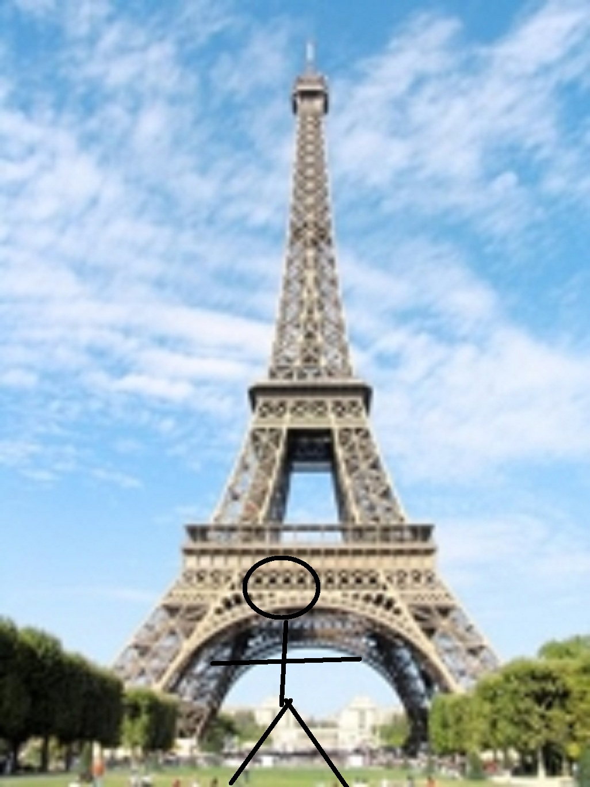

|
Parijs
Dit is mijn verslag over een toernooi.
Ik en Jorden gingen naar Parijs om daar een schaaktoernooi te spelen tussen 12 - 19 april.
We gingen eerst met de trein naar Breda en daar werden we opgehaald door onze opa en oma die met ons mee naar het toernooi gingen.
Zij gingen mee omdat ze al 40 jaar niet in Parijs waren geweest, Jorden en ik zijn 2 jaar geleden nog in Parijs geweest voor hetzelfde toernooi.
We moesten 5 uur naar Parijs rijden en daarna zaten we nog een uur in de file enzo en duurde het nog best wel lang voordat we bij ons huisje waren.
Mede doordat mijn opa en oma niet zo slim bezig waren met welke afslagen ze moesten nemen.
Het toernooi was in een buitenstadje in Parijs dat Malakoff heet, het is ongeveer 5 kilometer van het centrum van Parijs.
Gelukkig was het huisje ook in Malakoff en niet in Praag en konden we makkelijk naar de toernooizaal lopen.
De verhuurder van het huisje kende maar een grapje: hij wees naar een schoorsteen en zei "Eiffeltoren no.2" :|.
Mijn opa zag trouwens ook toen we onderweg waren een electriciteitsmast en toen zei hij: daar is de Eiffeltoren al :| oude mensen...
Er was een metro(zo'n ondergrondse trein die rond heel Parijs rijdt) 200 meter van ons huisje dus konden we elke dag iets bezoeken zonder de auto te gebruiken wat
niet leuk is in Parijs omdat er daar best wel heel erg veel verkeer is, lopend ga je ongeveer net zo snel, maar je wilt niet elke dag 5 kilometer heen en terug lopen.
De eerste ronde begon vroeg om 9 uur, en ik moest tegen iemand met een rating van 2000, ongeveer 150 punten onder mijn rating.
Ik speelde de opening slecht en verloor een pion maar daarna maakte hij 2 blunders achter elkaar en kwam ik in een iets betere stelling die ik daarna omzette in een punt.
Daarna zijn we naar de Eiffeltoren gegaan, waar Jorden en ik al 5 keer naartoe zijn gegaan dus was daar niet zoveel aan dus hebben we daar geen fotos van genomen.
De volgende de dag hadden we een dubbele ronde waarvan ik ronde 2 remise schaakte tegen 2350 en ronde 3 heel snel verloor van 2400, het verschil is duidelijk.
Daarna aten we spaghetti met gehakt.
Ronde 4 won ik erg gemakkelijk van 1800, hij gaf zowat al zijn stukken weg. Daarna zijn we naar het Loevre geweest waar Jorden en ik al 4 keer geweest waren dus er was
niet zoveel aan dus hebben we geen fotos gemaakt.
De volgende dag was weer erg makkelijk, ik had nu 3 en een half uit 5. Toen de ronde klaar was gingen we naar de Notre Dame, waar Jorden en ik al 3 keer geweest waren
en we hadden alles al gezien en er was niet zoveel aan dus hebben we geen fotos gemaakt(ook niet toegestaan).
Daarna moest ik tegen iemand met 2200, en omdat ik beter ben won ik van hem, gewoon ervaring. Later die dag gingen we naar de catacombes waar Jorden en ik al 2 keer
zijn geweest, dus was er niet zoveel te zien behalve skeletten van mensen dus verveelden jorden en ik ons heel snel dus hebben we geen fotos gemaakt.
4.5 uit 6!! Ik dacht die dag dat ik het goed deed en dat was ook zo, ik had al iets van 15 ratingpunten gewonnen!
Ronde 7 was een grote teleurstelling, ik verloor binnen 2 uur van 2400, het verschil tussen 2350 en 2400 is echt heel erg duidelijk.
Die dag gingen we naar de Arc de Triomph die door Napoleon gebouwd was eigenhandig, met zijn linkerhand in zijn jaszak! Aangezien Jorden en ik daar al 1 keer
geweest zijn was er echt helemaal niks aan dus hebben we er ook geen fotos gemaakt.
De dag daarna was ronde 8, ik moest tegen 2150 maar ik won echt heel gemakkelijk van hem, hij was gewoon slecht.
Daarna zijn we naar een andere arc geweest waar ik de naam niet van weet, het was wel de kleinste van de drie arcen in Parijs, aangezien Jorden en ik daar 0 keer geweest
waren was er heel veel te zien, helaas hebben we geen foto's gemaakt want het fototoestel was leeg.
Ronde 9 was de laatste ronde en we moesten weer vroeg beginnen, maar ik won weer. Ik heb 6.5 uit 9!! en ik heb 26 ratingpunten gewonnen!! Daarna zijn we naar het huisje
gegaan waar Jorden en ik al 9 keer waren geweest, aangezien er niks te zien was hebben we geen foto's genomen.

Dikke doei!
|